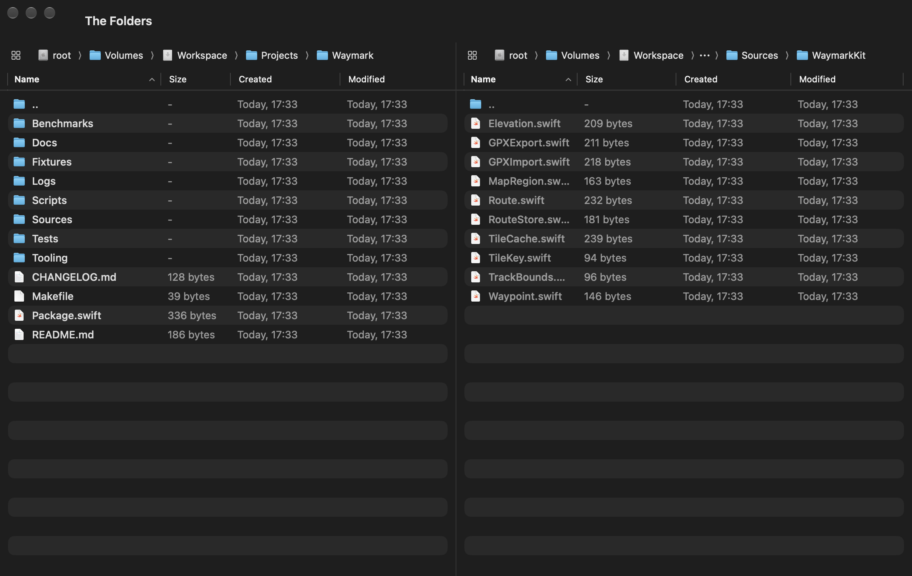
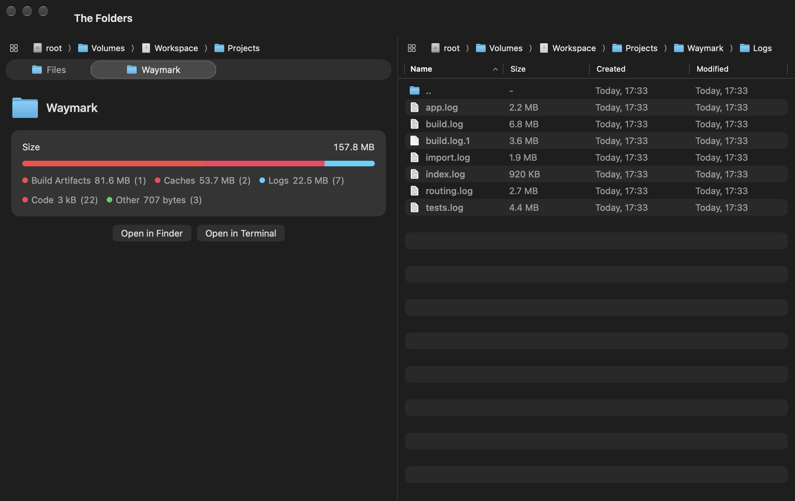
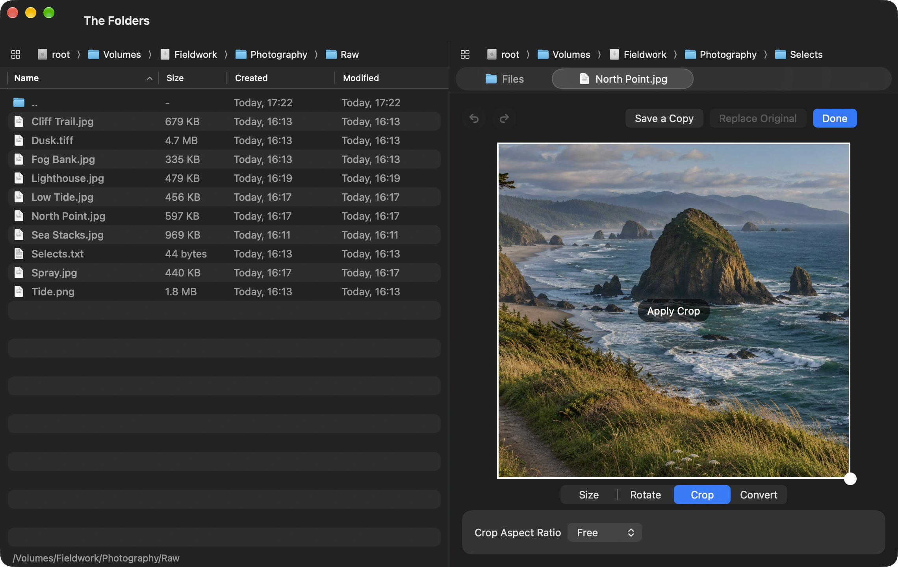
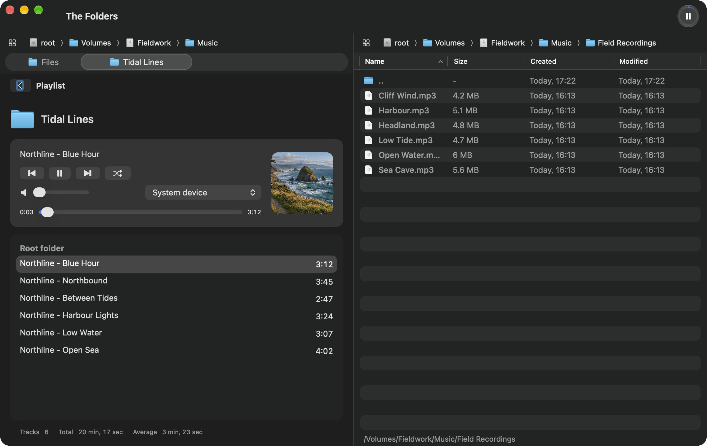

Side-by-side file management
Keep source files and build output open in separate panes. Drag files directly from one pane to the other.
The Folders is built for developers. Browse project folders side by side, preview source code, edit Markdown, and see what takes up disk space.

Keep source files and build output open in separate panes. Drag files directly from one pane to the other.
Press Space to preview files and Command plus a number to switch tabs. Use shortcuts to copy or move files between panes.
Read source code, JSON, YAML, and other text files in either pane. Keep several file and folder previews open in tabs.
Keep selected hidden files visible by name or pattern, copy file paths, and open project folders in Terminal.
See how much space a project folder uses and how that space is split across logs, caches, build artifacts, and other files.

Edit README files, changelogs, and project notes in a formatted Markdown preview. See the markup at the cursor and follow links to local files.

Crop, resize, rotate, or flip an image right in its preview. Save your edits or export a copy in a different format.

Play a folder of local tracks as a playlist. See the album artwork, skip or shuffle tracks, and control playback from the toolbar as you browse.

Requires macOS 26.6 or later. The signed DMG is about 10 MB.
Free to evaluate. Continued use requires a paid license.